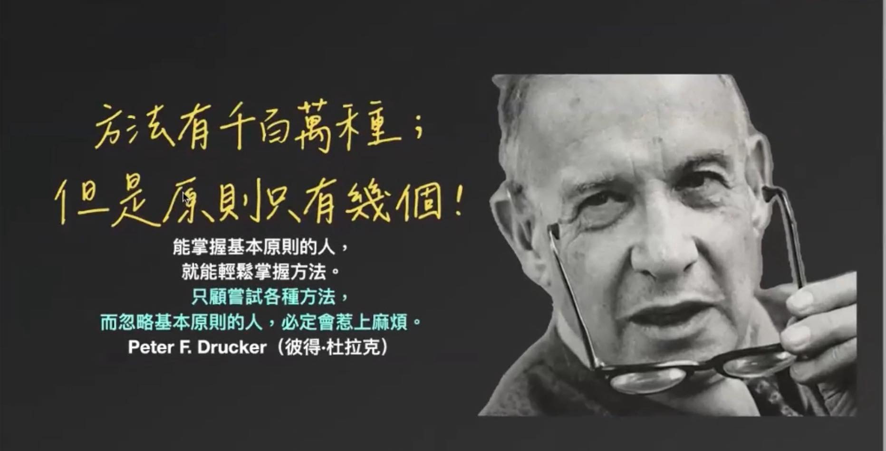

方法有千百萬種，但原則永遠只有幾個。
方法有千百萬種，但原則永遠只有幾個。
一路跟著保保老師參加What's Up Anatomy 什麼什麼解剖課解剖營，每一次都有不同的收穫，但這次這張投影片，卻讓我產生了前所未有的共鳴。在看到的一瞬間，我強烈地感受到，這正是我當初想開設工作坊的核心理念——「回到原則」。
身為臨床中醫師，面對患者的問題，無論採用哪一種技術、手法或工具，在動手之前，最關鍵的不是“要做什麼”，而是“為什麼要做”。
對有經驗的臨床醫師來說，消除、減緩症狀表現並非難事，真正挑戰的是找到關鍵的問題源頭。
唯有透過對結構與功能的理解，深入找出問題的 driver——也就是驅動症狀的源頭，治療才能真正有效。
臨床上可用的工具何其多，方藥、針灸、徒手、運動處方……琳瑯滿目。
但如果只是盲目地一一嘗試，缺乏清晰的邏輯與原則指引，那就像在黑暗中亂揮拳，即使再努力，也難以命中真正的目標。
更甚者，錯誤的介入方式，可能讓身體代償更多、結構更混亂。
這也讓我再次提醒自己——
學習再多方法，最重要的仍是回到核心原則。
因為正如Peter F. Drucker所說：「只顧著嘗試各種方法，而忽略基本原則的人，終將惹上麻煩。」
臨床之路沒有捷徑。正確的判斷，需要建立在穩固扎實的基礎原則上。
唯有不斷修正觀點、深化理解，才能讓每一次出手都更貼近問題的本質，而這也才是成長與穩定進步的關鍵。
#表面解剖觸診與徒手入門工作坊
中醫師 黃彥鈞
